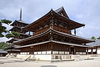
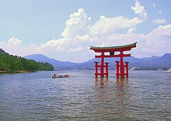

ဂျပန်နိုင်ငံမြေပုံ
ဂျပန်နိုင်ငံအကြောင်း
ဂျပန်သည် ကျွန်းပေါင်း ၆၈၄၈ ကျွန်း ပါဝင်သည့် ကျွန်းစုနိုင်ငံဖြစ်သည်။ အကြီးဆုံးကျွန်းများမှာ ဟွန်ရှူး(本州)၊ ဟော့ကိုင်းဒိုး(北海道)၊ ကျူရှူး (九州) နှင့် ရှီကိုကူး (四国) တို့ဖြစ်ကြပြီး ဂျပန်နိုင်ငံ၏ မြေနေရာစုစုပေါင်း၏ ၉၇ ရာခိုင်နှုန်းမျှရှိသည်။ ဟွန်းရှူးကျွန်းပေါ်တွင် မြို့တော်တိုကျိုနှင့် အခြားအိုဆာကာ၊ကျိုတို ကဲ့သို့မြို့ကြီးများလည်းရှိသည်။ ကျွန်းအများစုမှာ တောင်ထူထပ်ပြီးအများအပြားမှာ မီးတောင်များဖြစ်ကြပြီး မီးတောင်ပေါင်း၁၁၀ရှိသည်။ ထိုမီးတောင်များအနက် မီးတောင် ၄၇ ခုသည် မီးတောင်ရှင်များဖြစ်သည်ဟု သိပ္ပံပညာရှင်များက ဆိုကြသည်။ ဥပမာအားဖြင့် ဂျပန်၏ အမြင့်ဆုံးတောင်ထိပ်ဖြစ်သော ဖူဂျီတောင် (富士山) သည် မီးတောင်တစ်ခုဖြစ်သည်။
- 
- ဟိုးယူးဂျိ မှ ရွှေခန်းမ နှင့် ငါးထပ်ဘုရား သည် ကမ္ဘာပေါ်တွင် ရှေးအကျဆုံး သစ်သားအဆောက်အအုံများတွင် ပါဝင်ပြီး ဂျပန်နိုင်ငံ၏ အမျိုးသားရေးဆိုင်ရာ ထိန်းသိမ်းစောင့်ရှောက်ရာ နေရာနှင့် ယူနက်စကိုမှ ကမ္ဘာ့အမွေခံနေရာများ စာရင်းဝင် ဖြစ်သည်။
ဂျပန်သည် ကမ္ဘာပေါ်တွင် ဒဿမမြောက် လူဦးရေအများဆုံးဖြစ်ပြီး စုစုပေါင်း လူဦးရေ ၁၂၈ သန်းမျှရှိသည်။ တိုကျိုမြို့သည် ကမ္ဘာပေါ်တွင် လူဦးရေ အထူထပ်ဆုံးမြို့ကြီးများထဲတွင်ပါဝင်သည်။ မြို့တော်ဖြစ်သော တိုကျိုမြို့ကို စီရင်စု (၃) ခုဖြင့်ဖွဲစည်းထားကာ ခန့်မှန်းလူဦးရေ သန်း ၃္၈.၁၄ နေထိုင်ကြသည်။
ရှေးဟောင်းသုတေသန လေ့လာချက်များအရ ကျောက်ခေတ်ဟောင်း ခေတ်နှောင်း အချိန်ကာလကပင် ဂျပန်ကျွန်းများ ပေါ်တွင် လူများ နေထိုင်လျက် ရှိကြောင်း သက်သေအထောက်အထားများ တွေ့ရှိရသည်။ ဂျပန်ဟူသော အမည်နာမကို သမိုင်းမှတ်တမ်းအဖြစ် ပထမအေဒီရာစုနှစ်မှ တရုတ်သမိုင်းစာအုပ်အတွင်း ပထမဆုံးအကြိမ် တွေ့ရှိရပြီး အကျဉ်းချုပ်သာ ဖော်ပြထားသည်။
ရှေးဟောင်းသုတေသန လေ့လာချက်များအရ ကျောက်ခေတ်ဟောင်း ခေတ်နှောင်း အချိန်ကာလကပင် ဂျပန်ကျွန်းများ ပေါ်တွင် လူများ နေထိုင်လျက် ရှိကြောင်း သက်သေအထောက်အထားများ တွေ့ရှိရသည်။ ဂျပန်ဟူသော အမည်နာမကို သမိုင်းမှတ်တမ်းအဖြစ် ပထမအေဒီရာစုနှစ်မှ တရုတ်သမိုင်းစာအုပ်အတွင်း ပထမဆုံးအကြိမ် တွေ့ရှိရပြီး အကျဉ်းချုပ်သာ ဖော်ပြထားသည်။
အချိန်ကာလကြာမြင့်စွာ တသီးတသန့် နေခဲ့ပြီးနောက် ပြင်ပကမ္ဘာမှ လွှမ်းမိုးမှုများ ရောက်ရှိလာခြင်းသည် ဂျပန်သမိုင်း၏ သွင်ပြင်လက္ခဏာပင်ဖြစ်သည်။ ၁၉၄၇ ခုနှစ် ယခုလက်ရှိ ဖွဲ့စည်းပုံအခြေခံဥပဒေကို စတင်သုံးစွဲသည့် အချိန်မှစ၍ ဂျပန်သည် ဘုရင်ရှိသော စည်းမျဉ်းခံဘုရင်စနစ်နှင့် ဒိုင်းယက်ခေါ် လူထုကိုယ်စားလှယ်များဖြင့် ဖွဲ့စည်းထားသော အထက်နှင့် အောက်လွှတ်တော်တို့ တပေါင်းတစည်းတည်းအုပ်ချုပ်သည့်စနစ်ကို ထိန်းသိမ်းကျင့်သုံးလာခဲ့သည်။
ဂျပန်သည် အဓိက စီးပွားရေး အင်အားစုဖြစ်ပြီး nominal GDP (စုစုပေါင်း ပြည်တွင်းထုတ်ကုန်တန်ဖိုး) အရ ကမ္ဘာပေါ်တွင် ဒုတိယအကြီးဆုံး စီးပွားရေးစနစ်ဖြစ်ပြီး တတိယမြောက် အကြီးဆုံး ဝယ်အားရှိသည့် နိုင်ငံဖြစ်သည်။ ဂျပန်သည် ကုလသမဂ္ဂ၊ G8၊ G4၊ OECD နှင့် APEC တို့၏ အဖွဲ့ဝင်ဖြစ်ပြီး ကမ္ဘာပေါ်တွင် ကာကွယ်ရေးသုံးငွေ ပဉ္စမမြောက် အများဆုံး နိုင်ငံဖြစ်သည်။ ထို့ပြင် ကမ္ဘာပေါ်တွင် စတုတ္တမြောက် အကြီးဆုံး ကုန်စည်တင်ပို့သူဖြစ်ပြီး ဆဋ္ဌမမြောက် အကြီးဆုံး ကုန်စည် တင်သွင်းသူဖြစ်သည်။ ဂျပန်သည် လူနေမှု အဆင့်အတန်း မြင့်မားသော ဖွံ့ဖြိုးပြီး နိုင်ငံဖြစ်သည်။ လူထုဖွံဖြိုးမှုကိန်းညွှန်းနိုင်ငံများ စာရင်းတွင် အဆင့် ၄ ရှိသည်။ ကမ္ဘာပေါ်တွင် နည်းပညာ၊ စက်ပစ္စည်းနှင့် စက်ရုပ် ပိုင်းဆိုင်ရာ နယ်ပယ်များတွင် ဦးစီးဦးဆောင်သည့် နေရာမှာရှိသော နိုင်ငံဖြစ်သည်။ ကုလသမဂ္ဂနှင့် ကမ္ဘာ့ကျန်းမာရေးအဖွဲ့၏ ခန့်မှန်းချက်အရ လူ့သက်တမ်းအရှည်ဆုံးနှင့် ကလေးသူငယ်သေဆုံးမှု အနည်းဆုံးနိုင်ငံတစ်နိုင်ငံဖြစ်သည်။
နိုင်ငံရေး
ဂျပန်နိုင်ငံသည် စည်းမျဉ်းခံ ဘုရင်စနစ် ကျင့်သုံးသော နိုင်ငံ ဖြစ်ပြီး ဘုရင်၏ ဩဇာအာဏာမှာ အနည်းအကျဉ်းမျှသာ ရှိသည်။
ပွဲလမ်းသဘင်များအတွက် ဥသျှောင် ဖြစ်သော ဘုရင်ကို ဖွဲ့စည်းပုံအခြေခံဥပဒေက "နိုင်ငံတော်နှင့် ပြည်သူတို့၏ စည်းလုံးညီညွတ်မှု ၏ ပြယုဂ်" ဟု
သတ်မှတ်ထားသည်။ ဩဇာအာဏာမှာ ဝန်ကြီးချုပ် နှင့် ဒိုင်းယက်ဟု ခေါ်သော လွှတ်တော်၏ ရွေးချယ်ခံ အမတ်များ တွင်သာ ရှိသည်။
အချုပ်အခြာ အာဏာမှာ ပြည်သူတို့ ထံတွင်သာ ရှိသည်။ ဂျပန်နိုင်ငံ၏ လက်ရှိဘုရင်မှာ နာရူဟီတိုဖြစ်သည်။
 လက်ရှိဧက္ကရာဇ် နာရိုဟီတိုနာရိုဟီတို
လက်ရှိဧက္ကရာဇ် နာရိုဟီတိုနာရိုဟီတို
 ဂျပန်ဝန်ကြီးချုပ် ဖူမီအိုခီ
ဂျပန်ဝန်ကြီးချုပ် ဖူမီအိုခီ
ဂျပန်နိုင်ငံ၏ ဥပဒေပြု အစိတ်အပိုင်းမှာ နေရှင်နယ် ဒိုင်းယက် ဟုခေါ်သော လွှတ်တော် နှစ်ရပ်ဖြစ်သည်။
လွှတ်တော်တွင် အမတ် နေရာ ၄၈၀ ပါသော အောက်လွှတ်တော် ပါဝင်ပြီး ၄ နှစ်တကြိမ် သို့မဟုတ် ဖျက်သိမ်းသည့် အခါတွင် ပေါ်ပြူလာ ဖြစ်သော မဲဖြင့်
ရွေးချယ်ခန့်အပ် ကြသည်။ ဟောက်စ်အော့ဖ် ကောင်ဆယ်လာ ခေါ်သော အထက်လွှတ်တော်တွင် အမတ်နေရာ ၂၄၂ နေရာ ပါဝင်ပြီး ၆ နှစ်သက်တမ်း ရှိသည်။
အသက် ၂၀ ပြည့်ပြီးသူတိုင်း မဲပေးပိုင်ခွင့် ရှိပြီး ရွေးချယ်ခံ နေရာများ အားလုံးအတွက် လျှို့ဝှက်မဲစနစ် ကို ကျင့်သုံးသည်။ လွှတ်တော်တွင် ဆိုရှယ်လစ်ဘရယ်
ပါတီ ဖြစ်သော ဂျပန် ဒီမိုကရက်တစ် ပါတီ နှင့် ကွန်ဆာဗေးတစ် ဖြစ်သော လစ်ဘရယ် ဒီမိုကရက်တစ် ပါတီတို့ ကြီးစိုးနေကြသည်။
လစ်ဘရယ် ဒီမိုကရက်တစ် ပါတီမှာ ၁၉၅၅ မှစ၍ မဲအရေအတွက် အသာရခဲ့ပြီဂ ၁၉၉၃ နှင့် ၁၉၉၄ ကြား ၁၁ လ နှင့် ၂၀၀၉ နှင့် ၂၀၁၂ ကြား ကာလများမှ လွဲ၍ ဖြစ်သည်။ လစ်ဘရယ် ဒီမိုကရက်တစ်ပါတီမှ အောက်လွှတ်တော်တွင် ၂၉၄ နေရာနှင့် အထက်လွှတ်တော်တွင် ၈၃ နေရာ ရရှိထားသည်။
ဝန်ကြီးချုပ်မှာ ဂျပန်အစိုးရ၏ ခေါင်းဆောင် ဖြစ်ပြီး လွှတ်တော်များမှ အမတ်များထဲနေ၍ ရွေးချယ် သတ်မှတ်ပြီးနောက် ဘုရင်မှ ခန့်အပ်သည်။
ဝန်ကြီးချုပ်သည် အစိုးရအဖွဲ့၏ ခေါင်းဆောင်ဖြစ်ပြီး နိုင်ငံခြားရေးဝန်ကြီးကို ခန့်အပ်ပိုင်ခွင့် နှင့် ထုတ်ပယ်နိုင်ခွင့် ရှိသည်။
၂၀၁၂ ခုနှစ် အထွေထွေရွေးကောက်ပွဲ အပြီး လစ်ဘရယ် ဒီမိုကရက်တစ် ပါတီမှ အပြတ်အသတ် အနိုင်ရခဲ့ပြီးနောက် ရှင်ဇို အာဘေးမှ ယိုရှီဟီကို နိုဒါ၏
နေရာတွင် ၂၀၁၂ ခုနှစ် ဒီဇင်ဘာ ၂၆ မှစ၍ ဝန်ကြီးချုပ် ဖြစ်လာခဲ့သည်။ဝန်ကြီးချုပ်နေရာကို ဘုရင်က ခန့်အပ်ခြင်း ဖြစ်သော်လည်း ဖွဲ့စည်းပုံ အခြေခံ
ဥပဒေအရ လွှတ်တော်မှ သတ်မှတ်ပေးသူ မည်သူကို မဆို ဘုရင်က ခန့်အပ်ပေးရမည်ဟု ဖော်ပြပါရှိသည်။
ဂျပန် ဥပဒေမှာ သမိုင်းကြောင်းအရ တရုတ်ဥပဒေ၏ ဩဇာလွှမ်းမိုးမှု ရှိသော်လည်း အဲဒိုခေတ် အတွင်းတွင် "ကူဂျီကာတာ အိုဆာဒါမဲဂါကီ" အစရှိသော
သီးသန့် ဥပဒေများ ဖြစ်ပေါ်တိုးတက် လာခဲ့သည်။ သို့သော်လည်း ၁၉ ရာစု နှောင်းပိုင်းမှ စ၍ တရားစီရင်ရေး စနစ်မှာ ဥရောပမှ အရပ်ဘက် ဥပဒေများ
ပေါ်တွင် များစွာ အခြေခံလာပြီး အထူးသဖြင့် ဂျာမနီ နိုင်ငံ ဥပဒေ ပေါ်တွင် အခြေခံသည်။ ဥပမာအားဖြင့် ၁၈၉၆ တွင် ဂျပန် အစိုးရမှ ဂျာမန် ဥပဒေကြမ်း
တစ်ခုပေါ်တွင် မူတည်၍ အရပ်ဘက် ဥပဒေ တစ်ခုကို ပြဋ္ဌာန်းခဲ့ပြီး ဒုတိယကမ္ဘာစစ် အပြီး ပြင်ဆင် ပြီးချိန် အထိတိုင်အောင် သက်ရောက်မှု ရှိခဲ့သည်။
ဥပဒေပြု လွှတ်တော်မှ ပြဋ္ဌာန်းလိုက်သော ဥပဒေများကို ဘုရင်က တရားဝင် အသိအမှတ် ပြုပေးရသည်။ ဖွဲ့စည်းပုံ အခြေခံဥပဒေအရ ဘုရင်သည်
လွှတ်တော်မှ အတည်ပြုလိုက်သော ဥပဒေကို အတည်ပြုပေးရန် လိုအပ်ပြီး ထိုပြဋ္ဌာန်းချက်ကို ဆန့်ကျင်ရန် အခွင့်အာဏာ ပေးမထားပေ။
ဂျပန် တရားရုံးစနစ်ကို လေးပိုင်း ခွဲခြားထားပြီး တရားရုံးချုပ် နှင့် အောက်ရုံး ၃ ခု တို့ ဖြစ်သည်။ဂျပန်နိုင်ငံ ပြဋ္ဌာန်း ဥပဒေ၏ အဓိက အပိုင်းကို ဥပဒေ
သတ်မှတ်ချက်ဟု ခေါ်သည်။
စီးပွားရေး
ဂျပန်နိုင်ငံ၏ စီးပွားရေးဖွံ့ဖြိုးမှုနှင့် ပတ်သက်သော ဖွဲ့စည်းပုံ အင်္ဂါရပ်များဖြစ်သည့် သယ်ယူပို့ဆောင်ရေးဆိုင်ရာ ကုန်းလမ်းနှင့် ရေလမ်း လမ်းကြောင်းကွန်ယက်များ နှင့်
အိုဆာကာ ဆန်ကုန်သည်တို့၏ အနာဂတ်သို့ ကြိုတင်ရောင်းဝယ်ခြင်း၊ ဘဏ်လုပ်ငန်းနှင့် အာမခံလုပ်ငန်းတို့ မှာ အဲဒိုခေတ်မှ စတင်ဖွံ့ဖြိုးလာခဲ့သည်။
မေဂျီခေတ် ၁၈၆၈ မှစ၍ ဂျပန်သည် စီးပွားရေး အရ ဖွံဖြိုးလာခဲ့ပြီး ဈေးကွက်စီးပွားရေး စနစ်ကို ကျင့်သုံးလာခဲ့သည်။
ယနေ့ခေတ်၏ စီးပွားရေး လုပ်ငန်း အများစုမှာ ထိုအချိန်မှ စတင်ထည်ထောင်ခဲ့ခြင်း ဖြစ်ပြီး ဂျပန်အနေနှင့် အာရှ၏ အဖွံ့ဖြိုးဆုံး နိုင်ငံတစ်ခု ဖြစ်လာခဲ့သည်။
၁၉၆၀ ခုနှစ်များ မှ ၁၉၈၀ ခုနှစ်များ အတွင်း အမှန်တကယ် ဖြစ်ပျက်ခဲ့သည့် စီးပွားရေး တိုးတက်မှုများကို ဂျပန်၏ စစ်ပြီးခေတ် စီးပွားရေး ထူးထွေဆန်းပြားခြင်းများဟု
ခေါ်တွင်ခဲ့သည်။ စီးပွားရေး တိုးတက်မှုမှာ ၁၉၆၀ ခုနှစ်များမှ ၁၉၇၀ ခုနှစ်များအတွင်း ပျမ်းမျှအားဖြင့် ၇.၅ ရာခိုင်နှုန်း ရှိခဲ့ပြီး ၁၉၈၀ ခုနှစ်များမှ ၁၉၉၀ခုနှစ်များ
အစောပိုင်း အထိ ၃.၂ ရာခိုင်နှုန်းမျှ ရှိခဲ့သည်။
၁၉၉၀ ခုနှစ်များတွင် ဖွံ့ဖြိုးမှု သိသိသာသာ လျော့ကျသွားခဲ့ပြီး ထိုအချိန်ကို ဂျပန်တို့က ဆုံးရှုံးမှု ဆယ်စုနှစ်ဟု ခေါ်ကြသည်။
အဓိကအားဖြင့် ဂျပန်တို့၏ ပိုင်ဆိုင်မှုများဆိုင်ရာ ပူဖောင်း အကျိုးသက်ရောက်မှု အပြီး သက်ရောက်မှုများနှင့် စတော့ခ်ဈေးကွက်နှင့် အိမ်ခြံမြေဈေးကွက်များမှ
ဈေးကစားခြင်းကြောင့် ဖြစ်ပေါ်နေသည့် အပိုတန်ဖိုးများကို ညှစ်ထုတ်ယူရန် ကြိုးစားသည့် ပြည်တွင်း ပေါ်လစီများကြောင့် ဖြစ်သည်။ စီးပွားရေး ဖွံ့ဖြိုးမှုကို ပြန်လည်
ရှင်သန်ရန် ကြိုးစားသည့် အစိုးရ၏ ကြိုးပမ်းမှုတွင် အောင်မြင်မှု အနည်းငယ်သာ ရရှိပြီး ၂၀၀၀ ခုနှစ်များအတွင်း ကမ္ဘာ့စီးပွားရေး ကျဆင်းမှုကြောင့်လည်း ပိုမို၍
အဟန့်အတား ဖြစ်စေခဲ့သည်။၂၀၀၅ ခုနှစ် နောက်ပိုင်းတွင် စီးပွားရေးမှာ ပြန်လည်အသက်ဝင်မည့် လက္ခဏာများ ပြသလာခဲ့ပြီး ထိုနှစ်၏ ဂျီဒီပီ
တိုးတက်မှုနှုန်းမှဦ ၂.၈ ရာခိုင်နှုန်း ဖြစ်သဖြင့် အမေရိကန်နှင့် ဥရောပသမဂ္ဂတို့၏ ထိုအချိန်အတွင်း ဖွံ့ဖြိုးမှုနှုန်းထက် သာလွန်ခဲ့သည်။
၂၀၁၂ ခုနှစ် စာရင်းအရ ဂျပန်သည် အမေရိကန်နှင့် တရုတ်နိုင်ငံတို့ပြီးလျှင် နိုင်ငံအဆင့် အမည်ခံ ဂျီဒီပီအားဖြင့် တတိယ စီးပွားရေး အကြီးမားဆုံး
နိုင်ငံ ဖြစ်ပြီး ဝယ်ယူနိုင်စွမ်း ကွာခြားမှုနှုန်းကို ထည့်သွင်းတွက်ချက်လျှင် အမေရိကန်၊ တရုတ် နှင့် အိန္ဒိယတို့ ပြီးလျှင် စတုတ္ထမြောက် နိုင်ငံအဆင့် စီးပွားရေး
အကြီးမားဆုံး နိုင်ငံ ဖြစ်သည်။ ၂၀၁၃ ခုနှစ်တွင် ဂျပန်နိုင်ငံ အစိုးရ၏ ကြွေးမြီမှာ နိုင်ငံ၏ စုစုပေါင်းပြည်တွင်းထုတ်ကုန်မှ ၂၀၀ ရာခိုင်နှုန်း
ထက်ကျော်လွန်သဖြင့် ကမ္ဘာပေါ်ရှိ နိုင်ငံအားလုံးတွင် ဒုတိယမြောက် ကြွေးမြီ အများဆုံး နိုင်ငံ ဖြစ်ခဲ့သည်။ ၂၀၁၁ ခုနှစ် ဩဂုတ်လ မူဒီ စံသတ်မှတ်ချက်တွင်
နိုင်ငံအလိုက် ဘတ်ဂျက် လိုငွေပြမှုနှင့် ချေးငွေအပေါ်တွင် မူတည်၍ ဂျပန်၏ နှစ်ရှည်နိုင်ငံ ကြွေးမြီ စံသတ်မှတ်ချက်အား Aa3 မှ Aa2 သို့ တစ်ဆင့် လျှော့ချ ခဲ့သည်။
၂၀၀၉ ခုနှစ် ကမ္ဘာ့ စီးပွားကျဆင်းမှုနှင့် ၂၀၁၁ မတ်လ ငလျင်နှင့် ဆူနာမီတို့ကြောင့် ဖြစ်သော အစိုးရ၏ ကြွေးမြီနှင့် ဘတ်ဂျက် လိုငွေပြမှုတို့ကြောင့်
ထိုသို့ စံသတ်မှတ်ချက် လျှော့ချ ခံခဲ့ရခြင်း ဖြစ်သည်။ ဝန်ဆောင်မှု ကဏ္ဍမှ စုစုပေါင်း ပြည်တွင်းဝင်ငွေ၏ ၄ပုံ ၃ပုံမျှကို ပံ့ပိုးပေးလျက် ရှိသည်။
- SONY

- တိုကျိုမြို့ မီနာတိုအရပ်ရှိ ဆိုနီ၏ ဌာနချုပ် အဆောက်အဦး
- TOYOTA

- ဂျပန်နိုင်ငံ တိုယိုတာစီးတီးရှိ တိုယိုတာ၏ ဌာနချုပ်
- NISSAN

- နီဆန်း မော်တော်ကား ကုမ္ပဏီ
ဘာသာရေး
- 
- ဟီရိုရှီးမားမြို့ အနီးရှိ အိဆုကူရှီးမား ဝတ်ပြုကျောင်းမှ ဂိတ်တံခါး သည် ဂျပန်နိုင်ငံ၏ အလှဆုံးနေရာသုံးခုတွင် တစ်ခုအပါအဝင် ဖြစ်ပြီး ယူနက်စကို
ကမ္ဘာ့အမွေခံ နေရာတစ်ခု ဖြစ်သည်

- ဂျပန်နိုင်ငံတိုကျိုမြို့ရှိဗလီပုံ
ဂျပန်နိုင်ငံသည် ဖွဲ့စည်းပုံ အခြေခံဥပဒေ၏ အပိုဒ် ၂၀ အရ ဘာသာရေး လွတ်လပ်ခွင့် အပြည့်အဝ ရှိသည်။
ခန့်မှန်းချက်အရ ဂျပန်လူဦးရေ ၏ ၈၄ ရာခိုင်နှုန်းမှ ၉၆ ရာခိုင်နှုန်းမှာ ဗုဒ္ဓဘာသာ သို့မဟုတ် ရှင်တိုဘာသာကို ကိုးကွယ်ကြသည်ပြီး
ထိုဘာသာ နှစ်ခု စလုံးကို လက်ခံသူလည်း အများ အပြား ရှိသည်။ သို့သော်လည်း ထိုခန့်မှန်းချက်မှာ ဘုရားကျောင်းနှင့် ဆက်နွယ်နေသူကိုသာ
ခန့်မှန်းခြင်း ဖြစ်ပြီး အမှန်တကယ် ယုံကြည်သက်ဝင်သူကို ခန့်မှန်းခြင်း မဟုတ်ပေ။ အခြားလေ့လာချက်တစ်ခု အရ လူဦးရေ၏ ၃၀ ရာခိုင်နှုန်းက
သာလျှင် ဘာသာတရား တစ်ခုခုကို ယုံကြည်ကိုးကွယ်သူများဟု မိမိတို့ဘာသာ ဆိုကြသည် ဟု ဆိုသည်။ အက်ဒ်ဝင် ရိုင်းရှာဝါ နှင့် မားရီးယပ်စ် ဂျန်ဆန်တို့၏
အဆိုအရ ဂျပန်လူမျိုး ၇၀ မှ ၈၀ ရာခိုင်နှုန်းမှာ စာရင်းဇယား ကောက်ယူသူများအား သူတို့သည် မည်သည့်ဘာသာကိုမှ ကိုးကွယ်သူများ
မဟုတ်ဟု ပြောလေ့ရှိကြောင်း သိရသည်။
သို့သော်လည်း ဘာသာရေးတွင် ပါဝင်ပတ်သက်မှုမှာ မြင့်မားပြီး အထူးသဖြင့် ပွဲတော်များနှင့် နှင့် နှစ်သစ်ကူး ပထမဆုံး ဘုရားကျောင်းသို့ သွားခြင်း စသော
အခါကြီးများတွင် ဖြစ်သည်။ တရုတ်နိုင်ငံမှာ တာအိုဘာသာ နှင့် ကွန်ဖြူးရှပ် ဘာသာတို့မှာလည်း ဂျပန်တို့၏ ယုံကြည်မှုနှင့် ထုံးတမ်းစဉ်လာများကို
လွှမ်းမိုးမှု ရှိသည်။ ဂျပန်နိုင်ငံ ရှိ လမ်းများမှာ တာနာဘာတာ (ကြယ်ပွဲတော်)၊ အိုဘွန် (သင်္ချိုင်းကန်တော့ပွဲ) နှင့် ခရစ်စမတ်တို့တွင် အလှဆင်ထားလေ့ ရှိသည်။
ဂျပန်လူဦးရေ၏ ၁ ရာခိုင်နှုန်း အောက်မှာသာ ခရစ်ယာန် ဘာသာ ကိုးကွယ်ကြသည်။အစ္စလာမ်ဘာသာကိုကိုးကွယ်သူများလည်းရှိသည်။
ဂျပန်နိုင်ငံရှိအစ္စလာမ်ဘာသာဝင်လူဦးရေ၏၉၀ရာခိုင်နှုန်းမှာပါကစ္စတန်၊အင်ဒိုနီရှားအစရှိသည့်မွတ်ဆလင်နိုင်ငံများမှလာရောက်အလုပ်လုပ်ကိုင်ကြသည့်
ပြောင်းရွှေ့လုပ်သားများဖြစ်ပြီးကျန်၁၀ရာခိုင်နှုန်းမှာဂျပန်နိုင်ငံသားများဖြစ်သည်။အစ္စလာမ်ဘာသာအားကိုးကွယ်သူ (၂၀၀၀၀၀) ရှိသည်။
အစ္စလာမ်ဘာသာကိုဂျပန်နိုင်ငံလူဦးရေ၏၀ဒဿမ၁ရာခိုင်နှုန်းကိုးကွယ်ကြသည်။ ထို့အပြင်ဟိန္ဒူဘာသာဝင်၊ ဆစ်ခ်ဘာသာဝင်နှင့် ဂျူးဘာသာဝင် အနည်းငယ်မျှလည်း
ရှိသည်။
ဘာသာစကား
ဂျပန်လူဦးရေ၏ ၉၉ ရာခိုင်နှုန်းမှာ ဂျပန်ဘာသာစကားကို ပထမ ဘာသာစကားအနေဖြင့် ပြောဆိုကြသည်။
ဂျပန်ဘာသာမှာ အဓိပ္ပာယ်ရှိသာ စာလုံးတစ်လုံးစီကို ပေါင်းစပ်ခြင်းဖြင့် စာလုံးတွဲ ဖြစ်ပေါ်သော ဘာသာစကားဖြစ်ပြီး ဂုဏ်ပြုခြင်း ချီးမြှောက်ခြင်းကို
အလေးပေးကာ ဂျပန် လူ့အဖွဲ့အစည်း၏ ဝါစဉ် ခွဲခြားမှု သဘာဝကို ထင်ဟပ်ပြနေပြီး ကြိယာနှင့် အချို့သော စကားလုံးများမှာ နားထောင်သူနှင့် ပြောကြားသူတို့၏
အဆင့်ကို ညွှန်းဆိုလျက် ရှိသည်။ ဂျပန် စာ ရေးသားရာတွင် ခန်းဂျီး ဟု ခေါ်သော တရုတ်စကားလုံးများကို အသုံးပြုကြပြီး ရိုးရှင်းသော တရုတ်အက္ခရာများကို
အခြေခံထားသော ခါန ဟုခေါ်သော အက္ခရာစဉ် နှစ်မျိုးရှိကာ လက်တင် အက္ခရာနှင့် အာရပ်ကိန်းဂဏန်းများကိုလည်း အသုံးပြုကြသည်။
ဂျပန်ဘာသာစကား အပြင် ရူကျူးဘာသာစကားများ ဖြစ်သော အာမာမိ၊ ကူနိဂါမိ၊ အိုကီနာဝန်၊ မိယာကို၊ ယဲယမာ၊ ယိုနဂူနိ အစရှိသော ဂျပိုနစ် မိသားစုဝင်
ဖြစ်သော ဘာသာစကား ဖြစ်သော ဘာသာစကားများကိုလည်း ရူကျူးကျွန်းများတွင် ပြောဆိုကြသည်။ ကလေးငယ်များထဲမှ
ထိုဘာသာစကားများကို သင်ယူသူ နည်းပါးသည်။ သို့သော်လည်း ယခု လတ်တလောနှစ်များတွင် ဒေသခံ အစိုးရများက ရိုးရာ ဘာသာစကားနှင့် ပတ်သက်၍
စိတ်ဝင်စားမှု တိုးပွားလာရန် လုပ်ဆောင်လျက် ရှိသည်။ အိုကီနာဝါ ဂျပန်ဘာသာစကားခွဲကိုလည်း ထိုနယ်မြေတွင် ပြဆိုကြသည်။ အအိနု
ဘာသာစကားမှာ ဂျပန်ဘာသာစကားနှင့် မည်သည့် ဘာသာစကားနှင့်မျှ ဆက်စပ်ခြင်း မရှိဘဲ ပျောက်ကွယ်မည်ကို စိုးရိမ်ရသည့် အခြေအနေဖြစ်နေပြီး
ဟော့ကိုင်းဒိုးတွင်သာ အသက်ကြီးသော ဌာနေ စကားပြောသူ အချို့ ကျန်ရှိသည်။ အစိုးရကျောင်းနှင့် ပုဂ္ဂလိက ကျောင်း အတော်များများတွင် ကျောင်းသားများ
အနေနှင့် ဂျပန်ဘာသာနှင့် အင်္ဂလိပ်ဘာသာ နှစ်ခုစလုံးကို သင်ယူရန် လိုအပ်သည်။
ပညာရေး
၁၈၇၂ ခုနှစ် မေဂျီ ပြုပြင်ပြောင်းလဲရေးခေတ်တွင် မူလတန်းကျောင်းများ၊ အထက်တန်းကျောင်းများ နှင့် တက္ကသိုလ်များကို စတင် ဖွင့်လှစ်ခဲ့သည်။
၁၉၄၇ ခုနှစ်မှစ၍ မူလတန်းနှင့် အလယ်တန်း ပညာရေးကို မသင်မနေရ ပညာရေး အဖြစ် သတ်မှတ်ခဲ့ပြီး အချိန်ကာလ အားဖြင့် အသက် ၆ နှစ် မှ ၁၅ နှစ် အထိ
၉ နှစ် ကြာမြင့်သည်။ ဂျပန် ပညာရေး၊ယဉ်ကျေးမှု၊ အားကစား၊ သိပ္ပံနှင့် နည်းပညာ ဝန်ကြီးဌာန ၏ အဆိုအရ အလယ်တန်း အောင်မြင်ပြီးသော ကလေးငယ်
အတော်များများက အထက်တန်း ၃ နှစ်ကို ဆက်လက်သင်ယူကြသည်။ ၂၀၀၅ ခုနှစ်တွင် အထက်တန်း အောင်မြင်ပြီးသူ ၇၅.၉ ရာခိုင်နှုန်းသည် တက္ကသိုလ်၊
ဂျူနီယာ ကောလိပ်၊ ကုန်သွယ်ရေး သင်တန်းကျောင်းနှင့် အခြားသော အဆင့်မြင့်ပညာသင်ကျောင်းများသို့ ဆက်လက် တက်ရောက်ကြသည်။
ဂျပန်တွင် ထိပ်ဆုံးအဆင့် သတ်မှတ်ထားသော တက္ကသိုလ် နှစ်ခုမှာ တိုကျိုတက္ကသိုလ် နှင့် ကျိုတိုတက္ကသိုလ်တို့ ဖြစ်ကြသည်။ အိုအီးစီဒီမှ
ကြီးမှူးကျင်းပသော နိုင်ငံတကာကျောင်းသားများ၏ အရည်အချင်းစစ် စာမေးပွဲတွင် ဂျပန်နိုင်ငံမှ ၁၅ နှစ်သား ကျောင်းသားတစ်ဦး၏ အသိပညာနှင့် အတတ်ပညာကို
တစ်ကမ္ဘာလုံး ဆဋ္ဌမ အဆင့်အဖြစ် သတ်မှတ်ထားသည်။
ကျန်းမာရေး
ဂျပန်နိုင်ငံတွင် ကျန်းမာရေး စောင့်ရှောက်မှုကို နိုင်ငံအစိုးရနှင့် ဒေသဆိုင်ရာ အစိုးရများက တာဝန်ယူပေးသည်။ တစ်ဦးချင်းအတွက်
ကျန်းမာရေး ဝန်ဆောင်မှုနှင့် သက်ဆိုင်သော အဖိုးအခများကို အားလုံးနှင့် ဆိုင်သော ကျန်းမာရေး အာမခံစနစ်မှ ပေးဆောင်ပြီး အားလုံး တန်းတူညီမျှ
အသုံးပြုနိုင်ကာ အစိုးရ ကော်မတီမှ အဖိုးအခများကို သတ်မှတ်ပေးသည်။ အလုပ်ရှင်မှ အာမခံ ထားမပေးသော လူများ အနေဖြင့် တစ်နိုင်ငံလုံးနှင့် ဆိုင်သော
ကျန်းမာရေး အာမခံတွင် ပါဝင်နိုင်ပြီး ဒေသခံ အစိုးရများမှ စီမံခန့်ခွဲပေးသည်။ ၁၉၇၃ မှစ၍ အသက်ကြီးသော သူများအားလုံးကို အစိုးရမှ ထောက်ပံ့သော
အာမခံဖြင့် အကာအကွယ် ပေးထားသည်။ လူနာများ အနေဖြင့် ဆရာဝန် သို့မဟုတ် ဆေးကုသမည့် နေရာကို မိမိစိတ်ကြိုက် ရွေးချယ်ခွင့် ရှိသည်။
ယဉ်ကျေးမှု
ဂျပန်တို့၏ ယဉ်ကျေးမှုသည် ရှေးဦးအစ ယဉ်ကျေးမှုမှ အဆင့်ဆင့် တိုးတက်ပြောင်းလဲ လာခဲ့ခြင်းဖြစ်သည်။
ခေတ်ပြိုင် ယဉ်ကျေးမှုတွင် အာရှ၊ ဥရောပ နှင့် မြောက်အမေရိကမှ လွှမ်းမိုးမှုများ ပေါင်းစပ်နေသည်ကို တွေ့ရသည်။ ဂျပန် ယဉ်ကျေးမှုများတွင်
လက်မှုပညာများဖြစ်သော ကြွေထည်၊ အဝတ်အထည်၊ ယွန်းထည်၊ ဓား နှင့် အရုပ်များ၊ ဖျော်ဖြေမှုများ ဖြစ်သော ဘွန်းရာကု (ရုပ်သေး)၊
ကာဘုကီ(ကဇာတ်)၊ နို (ဂီတပဒေသာ)၊ အက နှင့် ရာကုဂို (ကွက်စိပ်)၊ အခြားယဉ်ကျေးမှုများ ဖြစ်သော လက်ဖက်ရည်ပွဲ(ရေနွေးကြမ်း)၊
အိကဲဘာနာ (ပန်းအလှဆင်ခြင်း)၊ ကိုယ်ခံပညာ၊ လက်ရေးလှပညာ၊ အိုရိဂါမီ (စက္ကူခေါက်ပညာ)၊ အွန်ဆန်(ရေပူစမ်းချိုးခြင်း)၊ ဂေးရှား(ကချေသည်)
နှင့် ကစားပွဲများ ပါဝင်သည်။ ဂျပန်သည် ရုပ်ဝတ္ထုဆိုင်ရာ ယဉ်ကျေးမှုများအပြင် ရုပ်ဝတ္ထုမဟုတ်သည့် ယဉ်ကျေးမှု လက္ခဏာများနှင့် အမျိုးသားရေး
အမွေအနှစ်များကို ထိန်းသိမ်းနိုင်ရန် စနစ်တစ်ခု ထားရှိသည်။ ယူနက်စကို ကမ္ဘာ့အမွေခံ နေရာများတွင် ဂျပန်နိုင်ငံမှ နေရာ ၁၆ခု ပါဝင်ပြီး ၁၂ ခုမှာ
ယဉ်ကျေးမှုနှင့် သက်ဆိုင်သော နေရာများ ဖြစ်သည်။